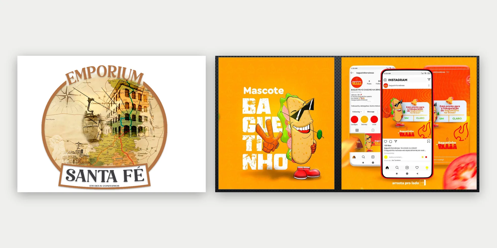
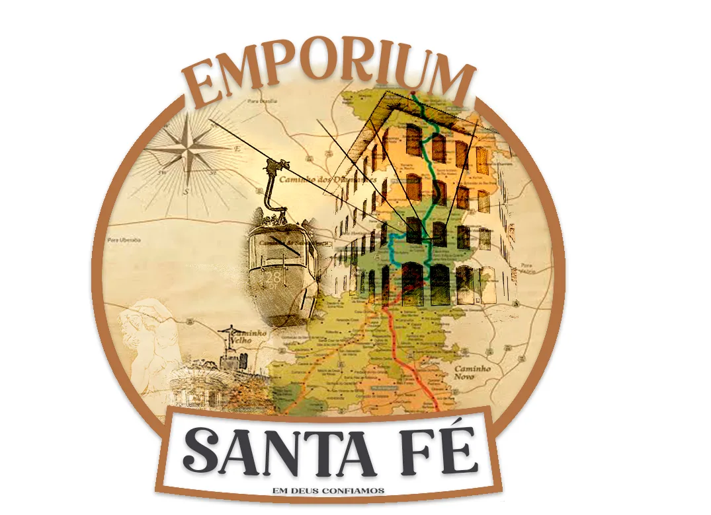
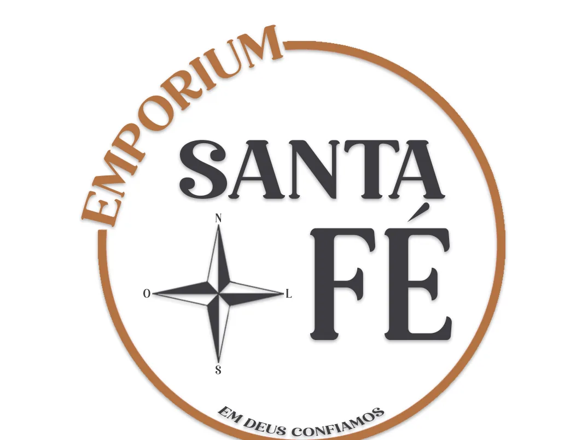
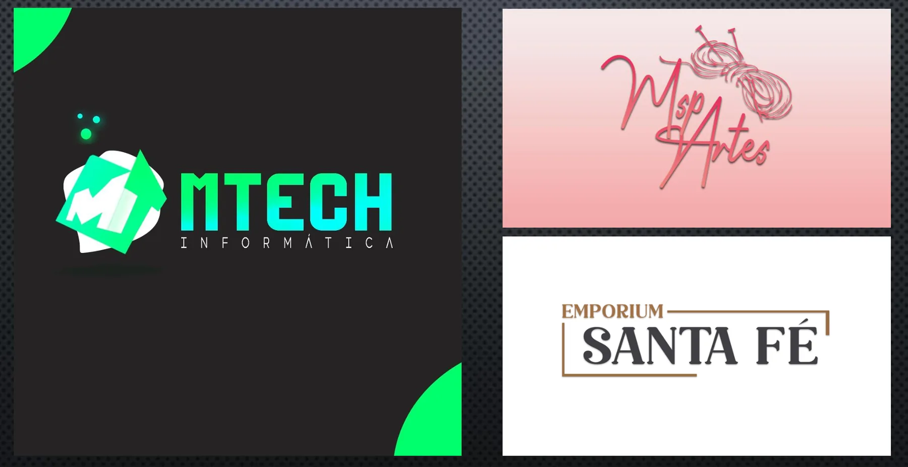
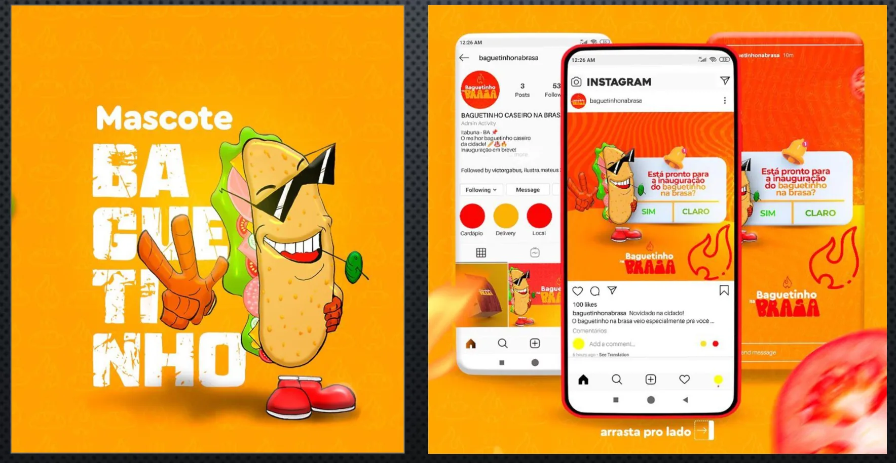
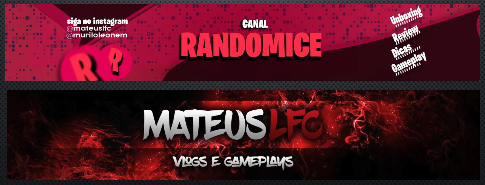

Logos, mascot & channel branding
Early Client Work
Logos, a food mascot and YouTube channel banners made for small businesses and creators in Brazil.

- Year
- 2024
- Course
- Freelance
- Tools
- Photoshop, Illustrator
- Type
- Logos, mascot & channel branding
Before design school I worked directly with clients on small identity jobs: a stamp and wordmark for Emporium Santa Fé, logos for a computer-repair shop and a craft brand, a mascot with matching Instagram posts, and banners for two YouTube channels. This work taught me to turn a brief into finished files quickly.
Freelance work completed before my studies at Seneca. Client names and logos belong to their owners.




